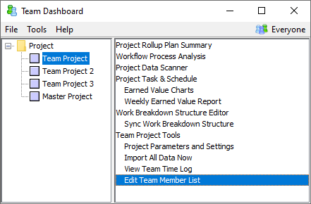

Enter List of Team Members
(TSP Launch Meeting No. 2)
The dashboard needs a list of project team members to facilitate
planning later in the launch. If you wish, you may enter this data
before the launch begins; otherwise, you can enter this information
during the launch. The list of team members can be edited at any
time.
In the Team Dashboard, select the appropriate team project from the tree
on the left, then choose the Edit Team Member List option from the list on
the right.

The Team List Editor will appear.

The left half of the window displays information about each team member,
while the right half of the window displays the calendar of available time per
person. In the table heading for the calendar, the first date is a hyperlink;
you can click that link to choose the day of the week when the schedule should
start. The Weekly Earned Value report will be most useful if you start the
schedule on the day of the week when the team holds their weekly meeting.
Using one line per team member, enter the following required information:
- Enter the team member's full name in
the first column.
- Enter the team member's initials in
the second column. These initials should correspond to the values
the person provided when they joined the team project. Within
this project, no two individuals should have the same initials. If you
happen to have two people on your project with the same initials,
have one select a different string of letters.
- The color in the third column will be
used later to quickly distinguish between individuals. If you
decide to change the default color provided for an individual, try
to ensure that the final list is comprised of mutually dissimilar
colors. Also, avoid using the color red, as it is used to indicate
unusual/error conditions.
- In the fourth column, enter the
approximate number of hours each team member plans to spend per
week on productive project work.
- The remaining columns allow you to
enter the schedule details for each individual:
- If an individual will be starting the
project later than the rest of the team, click and drag the
"START" indicator. (Example: in the image above, Chris White
will not start working on the project until 9/21.)
Alternatively, you can enter "0" for that individual in the
first few weeks of the schedule.
- Each week in the schedule will show
the default number of hours per week that were entered in column
4. If an individual has an exception - for example, due to
vacation or training - enter the exception in the appropriate
column. (Example: in the image above, Jane Smith will be
away from the office during the week of 9/28 - 10/5.)
- In certain
unusual circumstances, you may know that an individual will be
leaving the project on a particular date. (For example, they may
be leaving to work on a different project.) To set the date a
particular individual will stop working, put your mouse over the
handle on the far right edge of the table, and drag it to the left.
(Example: in the image above, Jill Hsu will be leaving the
project on 10/5.) If you do this by mistake, you can cancel
the end date by dragging the "STOP" indicator all the way to the
right edge of the table. Please note: the "STOP" date
should not be used to record the date you hope the project
will finish; milestone
commit dates are more appropriate for that purpose.
- To view different weeks on the calendar,
click the large left/right arrow buttons that appear in the date
header. You can also resize the window to see more weeks at one
time.
If you need to delete an entry from the list, simply delete the name
and initials for that row. When you save and reopen the team list,
that row will be automatically removed.
You can change the order of the individuals in the team member list by
highlighting a row, then dragging it up or down. In addition, if your team
is beginning a new project or new iteration, you can use Ctrl-C and Ctrl-V
to copy highlighted team member rows from one Team Member list window to
another.
Click the Save button when you are finished editing the list of
team members.